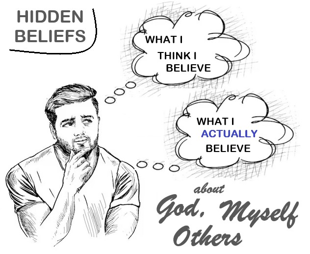
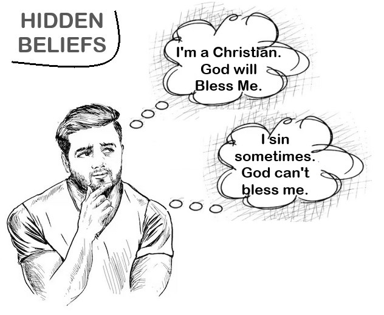
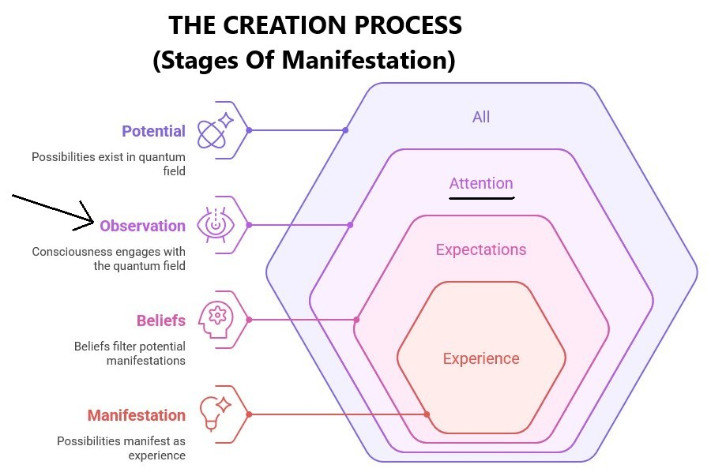

Chapter 3: The Observer Effect - You Create Your Reality
"As a man thinks in his heart, so is he." — Proverbs 23:7
Here's something that may surprise you: you are not a passive witness to reality—you are actively creating it in every moment. That’s right. The things that are happening to you right now are things that you created, believe it or not! This isn't some woo-woo metaphysical speculation or New Age wishful thinking that you'd find in a self-help book. Nope—it's the unavoidable conclusion drawn from both quantum physics and Jesus' most empowering teachings. The observer effect—that mind-bending principle that consciousness directly influences physical reality—isn't just some quirky laboratory curiosity that scientists whisper about in hushed tones. It's the fundamental process through which you're shaping your life experience right now, whether you realize it or not.
But hold your horses—let's be crystal clear about what this actually means. This isn't saying you can just snap your fingers and manifest a Ferrari by merely thinking happy thoughts and lighting some candles. Reality creation operates through multiple levels of consciousness, including collective belief systems and deeper aspects of mind that operate way below your everyday awareness, like a cosmic iceberg with most of its power hidden beneath the surface. But understanding this process can radically transform how you relate to the challenges, limitations, and possibilities in your life. It's like finally getting the instruction manual for how your mind - and indeed your life - actually works!
Jesus wasn't offering a simplistic manifestation formula but revealing a profound truth about consciousness and reality. When he emphasized believing "that you have received it" before seeing physical evidence, he was describing the quantum nature of manifestation—where consciousness shifts precede physical changes.
This process happens whether we're conscious of it or not. Our deepest beliefs and expectations act as filters, determining what possibilities from the quantum field will manifest in our experience. These beliefs operate like the parameters of a search engine, filtering the infinite possibilities of the quantum field down to the specific results we experience as "reality."
- Quantum Potential: All possibilities exist simultaneously in the quantum field
- Observation: Consciousness engages with this field through attention and intention
- Belief Filtering: Deep beliefs and expectations filter which potentials can manifest
- Collapse of Probability: Specific possibilities manifest as experience
- Reinforcement: Experience strengthens beliefs, creating a feedback loop

Let's begin with the layer which I believe is the largest determinant of what plays out in our reality: Our BELIEFS Layer. But it's tricky, In fact, it's a doozy: our most powerful beliefs operate like hidden puppet masters, pulling strings from the shadows of our unconscious mind. These sneaky little buggers are often forged in the fires of early childhood or carved into our psyche by traumatic experiences, creating invisible filters that sabotage what we can manifest despite our conscious desires. It's like having a bouncer at the club of your dreams who's been programmed to reject you before you even reach the door!
Picture this: buried deep in the basement of your consciousness, like ancient treasure maps hidden in a dusty attic, are the real, raw truths about what you actually believe—not what you think you believe, not what you tell yourself you believe, but what your soul really knows about God, about yourself, and about your fellow humans. These are the beliefs that whisper in your ear while you sleep, the ones that make your heart skip a beat when you dare to dream big.
If somewhere in that hidden vault you believe you'll be punished for your thoughts or that you don't deserve love or abundance, then no amount of positive affirmations or prayer will make it happen. You could stand in front of a mirror chanting "I am worthy" until your voice goes hoarse, but if your unconscious mind is screaming "You're a fraud!" in the background, guess which voice wins the day? That's why excavating these buried beliefs is absolutely crucial—and why this isn't the first book in the series. You've got to dig deep before you can build high.
Take Helene Hadsell, for example—this incredible woman could win almost every competition she entered, whether the prize was a house, a lawnmower, or a canoe. She became famous for it! What was her secret? She had zero belief that God would deny her those prizes. Her unconscious mind was completely aligned with abundance. No hidden sabotage, no secret self-punishment, no buried beliefs about unworthiness.
Here's the golden key to unlocking why certain patterns keep replaying in your reality: you've got to become a detective of your own soul and uncover what's buried in that second layer of the Reality Creation diagram—the belief layer, especially the ones you don't even know you have. And if I had to pick the most important beliefs to investigate first, I'd say your beliefs about your heavenly Father are absolutely critical. [More on this term 'heavenly Father' later] That's the foundation everything else is built on, and if that foundation has cracks, the whole house wobbles.
If you grew up in a vaguely Christian context then you need to read "Liberating Humanity: How Jesus Exposed The Evil God Of Moses And Warned Of Paul." It's that important.
Jesus addressed this dynamic repeatedly. When people couldn't receive healing despite his presence, he identified the limiting factor: He wasn't blaming people but was identifying the mechanism through which reality manifests—and offering the key to changing it.
Now let's move to the next layer in the Reality Creation Process Diagram: The OBSERVATION Layer
Many folk correctly believe that repeating affirmations, even doing this robotically, creating visualization boards, imagining the wish fulfilled, and similar techniques are mostly what there is to the attention layer. They are not incorrect, but there's more to it.
Reality creation isn't about superficial positive thinking. Jesus never taught people to deny their current reality or pretend everything was fine when it wasn't. Instead, he taught a profound shift in perspective—seeing from the quantum level of possibility rather than the apparent level of limitation.
There is some truth to the statement of being "transformed by the renewing of your mind" (Romans 12:2), even though this was penned by the false teacher, Paul. True transformation, however, happens when we change our perspective at the deepest levels. Our natural mind - which many refer to as the Ego-mind is unfortunately the problem. We don't create from our natural, wise, know-it-all ego-mind. No, we create from our higher mind, our Higher-Self, our God-Self, Source Energy, our Father. Our natural Mind can create nothing. Our God-mind creates everything!
That is why Jesus made confusing statements like in John 5:19 where he, referring to himself in the third person, states that he can ".... do nothing by himself. He can do only what he sees his Father doing." And in John 14:10 he states "... it is the Father, living in me, who is doing his work." The Consciousness or Quantum Field or Source Energy does the creating, not our natural mind.
So less effort. More relaxing and trusting our inner awareness, our consciousness, whose "yoke is easy" and whose "burden is light."
The observer effect operates through several key mechanisms:
1. Selective Attention - Your brain processes millions of bits of information every second, but your conscious mind can only handle about 40 bits. What you PAY ATTENTION TO literally determines what you experience as reality. But note this is not what you THINK ABOUT minute-by-minute with your natural mind. No, it's what you allow YOUR INNER AWARENESS to be conscious of, preferably when your natural mind is quiet. It is usually quiet just before you fall asleep and just as you wake up.
2. Interpretation - The meaning you assign to events shapes your emotional and physiological response. Two people can experience the same event and create entirely different realities based on their interpretation. Jesus demonstrated this when he reframed suffering not as punishment but as opportunity for growth and revelation.
3. Expectation - Your brain is a prediction machine, constantly creating models of what it expects to happen next. These expectations literally shape your perceptual processes, causing you to see what you expect to see and miss what you don't.
4. Resonance - You attract experiences that resonate with your energetic frequency, which is determined by your habitual thoughts, emotions, and beliefs. This is why Jesus emphasized becoming like little children—returning to a state of wonder, openness, and possibility.
Scientific research increasingly supports these dynamics. Studies in neuroplasticity show that attention literally rewires neural pathways. Research in epigenetics demonstrates that perception and belief can turn genes on and off without changing the underlying DNA. Experiments in psychoneuroimmunology reveal that our thoughts and emotions directly impact our physical health.
But how do we apply this knowledge practically? How do we shift our observation to create different realities? Jesus provided specific guidance:
- "Ask and it will be given to you" (Matthew 7:7) - Direct your attention toward what you want to experience
- "Do not worry about tomorrow" (Matthew 6:34) - Avoid creating negative futures through fearful projection
- "Judge not" (Matthew 7:1) - Suspend judgment to keep possibilities open
- "Whatever you bind on earth will be bound in heaven" (Matthew 18:18) - Your beliefs create constraints or freedom
- Practice mindful awareness of your thoughts and beliefs
- Question limiting interpretations of events
- Consciously direct attention toward possibilities rather than problems
- Cultivate emotional states that resonate with what you want to create
- Act as if what you desire is already present
Here's the beautiful thing about Jesus' approach to reality creation—it wasn't some selfish, materialistic grab for wealth and power. No way! It was about aligning with divine consciousness—seeing as our heavenly Father sees. From this elevated perspective, abundance, healing, and peace aren't special favors doled out to the chosen few—they're natural expressions of our connection to Source Energy, the very fabric of the cosmos itself.
This understanding is absolutely liberating! It breaks us free from the prison of rigid religious determinism (you know, that whole "everything is God's will" trap) and the equally confining secular materialist fatalism (the "we're just helpless victims of circumstance" nonsense). We're not passive pawns in some cosmic chess game—we're active co-creators working hand-in-hand with divine consciousness to manifest realities that ripple out with love, harmony, and the highest good for everyone.
And here's where things get really mind-blowing: the observer effect reveals that you've been sold a bill of goods about your own power. Your consciousness isn't some lonely prisoner trapped inside your skull, passively recording whatever "reality" happens to show up. It's a cosmic force that extends into and shapes the quantum field itself, literally manifesting the experiences that become your life. You're not just observing reality—you're creating it!
Jesus knew this secret. He lived from this profound understanding. And get this—he didn't keep it to himself. He threw open the doors and invited us all to step into the same power: "Very truly I tell you, whoever believes in me will do the works I have been doing, and they will do even greater things than these" (John 14:12). He wasn't just being nice—he was stating a fundamental truth about who we really are!
But wait, there's more! In the next section, we're going to explore how consciousness doesn't just transcend the boundaries of space and time—it even transcends the ultimate boundary of physical death. We'll dive into the mind-bending evidence from near-death experiences that suggests our consciousness might be far more eternal than we ever imagined. Buckle up—this is where things get really wild!